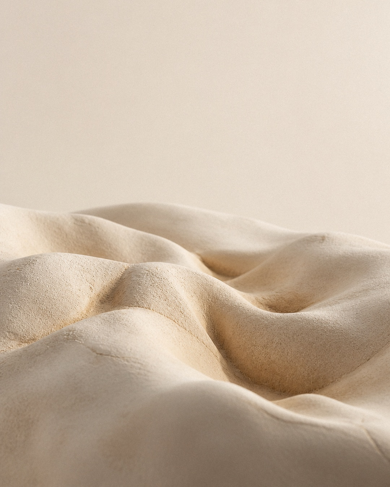

Laboratorija Olujić
Najskuplji zubi
su oni koje ste
nekada imali
besplatno.
Odlaganje
Uvek postoji
nešto preče.
Popraviću sledećeg meseca.
Nije strašno. Ne boli. Ne vidi se.
I tako prolaze godine.
Posledice
A onda dođe trenutak kada više ne popravljamo.
Već nadoknađujemo.
Mostovi.
Krunice.
Implantati.
Proteze.
Ono što je nekada moglo da se sačuva, sada ponekad mora da se zameni.
Preokret
Nije pitanje koliko koštaju novi zubi.
Pitanje je koliko je moglo da se sačuva.
Jer svaki prirodan zub koji sačuvamo znači jednostavniju terapiju, više mogućnosti i manje troškova u budućnosti.

Laboratorija
Olujić
Mi pravimo
nove zube.
Ali ćemo vam prvi reći da čuvate svoje.
Pišite mi
Sačuvajte ono što je vaše.